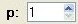

Polynomial Planar Phase Portraits
THE PARAMETERS (SUB)WINDOW
Polynomial Planar Phase Portraits
THE PARAMETERS (SUB)WINDOW

-
The Option Set will
toggle between the two options showed here. In Algebraic mode
some computation will be done in algebraic mode. These computations are
the search of singular points (finite and infinite), and the first terms
of the Taylor approximations of the separatrices. In Numeric mode,
everything is done in numerics. You will need to use the Numeric mode
if the degree of the Polynomial Differential System is high and it has
many coefficients. This is somehow subjective, and the fact is that you
will simply need to toggle to Numeric when
you have already tried a system in the Algebraic mode and the program has collapsed.
-
The Option Set will decide whether P4 tests every Taylor
approximation it has found, so it enters in a self-controlled procedure for improving it or
not. Normally it is recommended to use this option, but if you see a concrete
system where a separatrix is hard to deal with and you are not specially interested in it, you may
deactivate this option.
-
The input gives the value (negative power of 10) such that we will consider
any number below it (in module) as 0. In any numeric program you need to define such a number so to avoid that
a rounding error may produce a variable being different from 0 when it should be null. Of course this may mean
that you take as zero something that it should not, and so we allow this value to be modified. Anyway, if a
problem depends greatly on such small values, its numerical study may be hazardous.
-
The input
 gives the distance we will move from the singular point in order to
chose the first point of the integration for each separatrix. This value is the default one we will use for
every separatrix. When we choose the initial point we are making an error which is directly proportional to
this number elevated to the power of the Taylor approximation that we have done (greater or equal
than input
gives the distance we will move from the singular point in order to
chose the first point of the integration for each separatrix. This value is the default one we will use for
every separatrix. When we choose the initial point we are making an error which is directly proportional to
this number elevated to the power of the Taylor approximation that we have done (greater or equal
than input  explained in this same window). You may modify this
number but it may be more interesting to modify it for individual slow separatrices and this can be done in the
Plot Separatrices window.
explained in this same window). You may modify this
number but it may be more interesting to modify it for individual slow separatrices and this can be done in the
Plot Separatrices window.
-
The integer input will determine the degree up to which the
coefficients of the Taylor approximations of the separatrices will be done in any case. The computations
will be done in the mode defined by the Option Set . If the Option Set
is activated, then P4 will test if the Taylor approximation
fits properly with the vector field. In case it does not, it will look for one degree more and will repeat
the test until the maximum degree (see below) is reached or the test passes.
-
The procedure described above will continue being done in algebraic mode until we reach the value defined in
the integer input
 . From now on, the computation will be done in numeric mode.
We remark that must be larger than
.
. From now on, the computation will be done in numeric mode.
We remark that must be larger than
.
-
As this process needs to have an end, the integer input
 is the
maximum value
we will allow for the separatrix. If the test fails up to this level, this will be explained in the report
that P4 will produce.
is the
maximum value
we will allow for the separatrix. If the test fails up to this level, this will be explained in the report
that P4 will produce.
-
The integer input
 will determine the number of
Lyapunov constants that we wish to calculate for every focus-center that P4 may meet. We
know that you may be very interested in getting a large number of them, but you must be careful as the time for
computing them increases exponentialy. This can be a good reason to use the option
in the P4
window and then leave the REDUCE/MAPLE program running in batch mode.
will determine the number of
Lyapunov constants that we wish to calculate for every focus-center that P4 may meet. We
know that you may be very interested in getting a large number of them, but you must be careful as the time for
computing them increases exponentialy. This can be a good reason to use the option
in the P4
window and then leave the REDUCE/MAPLE program running in batch mode.
-
In the case you have selected to study all the singular points (or just the infinite ones) in the
P4 window, you will be asked to enter
the values of the powers  and which will define the
Poincare-Lyapunov Compactification. By default these two numbers are 1, and this leads
to the standard Poincare Compactification.
-
In the case you have selected to study only one singular point in the
P4 window, you will be asked to enter
the coordinates of that point in the inputs
 and
and  .
Be sure to introduce a real singular point. If you introduce parameters in the
Vector Field window, you may use these parameters in the (x0,y0) fields as well.
.
Be sure to introduce a real singular point. If you introduce parameters in the
Vector Field window, you may use these parameters in the (x0,y0) fields as well.
 Back to the main page
Back to the main page
 Back to the windows page
Back to the windows page